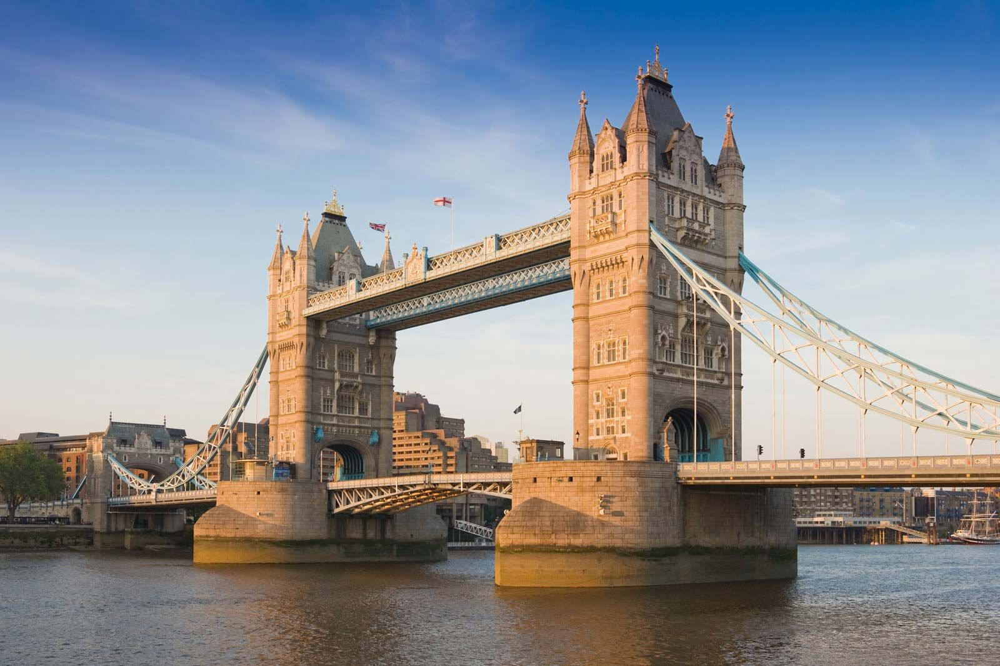

London is the capital of the United Kingdom and one of Europe’s most important cities. It is known for its long history, famous landmarks like Big Ben and Buckingham Palace, and its diverse population.
London was founded by the Romans around AD 43. The Roman town, called Londinium, grew to about 50,000 people because of its important port.
After Roman times, London grew again under the Saxons. It became very important after 1066. It survived the plague and the Great Fire of 1666. During the Industrial Revolution it became one of the biggest cities in the world. After bomb damage in World War II, it was rebuilt and became a modern global city.
London has hundreds of museums, libraries, theatres, and music venues. It has four UNESCO World Heritage Sites and hosts many festivals. It is also famous for fashion, film, art, and music.